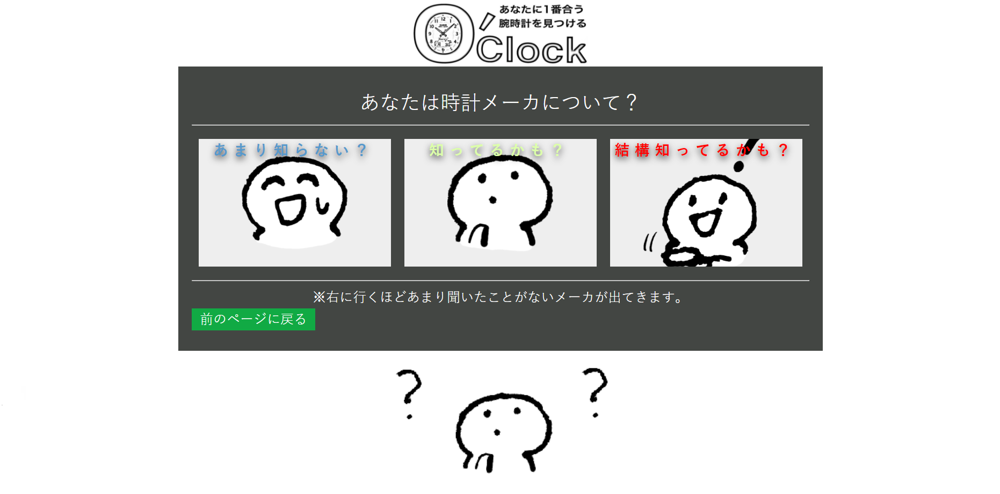

URL
Github
https://github.com/reone19/HEW-better-than-prototype
担当
全体的なデザイン
フロントエンドとバックエンド
※ロゴ作成は友人
作品について
時計をあらゆる視点やジャンルの細分化によって 時計に欲しい時計を見つける事や興味を持つこと を目的としたWeb診断サービスです。
コメント
学校で学んだ範囲で作れる自分の作品を作ろうと考えました。時計を選んだ理由は時計が好きだからです。 デザインやコンセプトがマッチして、それに付随してシステムもしっかり作られた物を作ってみようと試みた作品です。